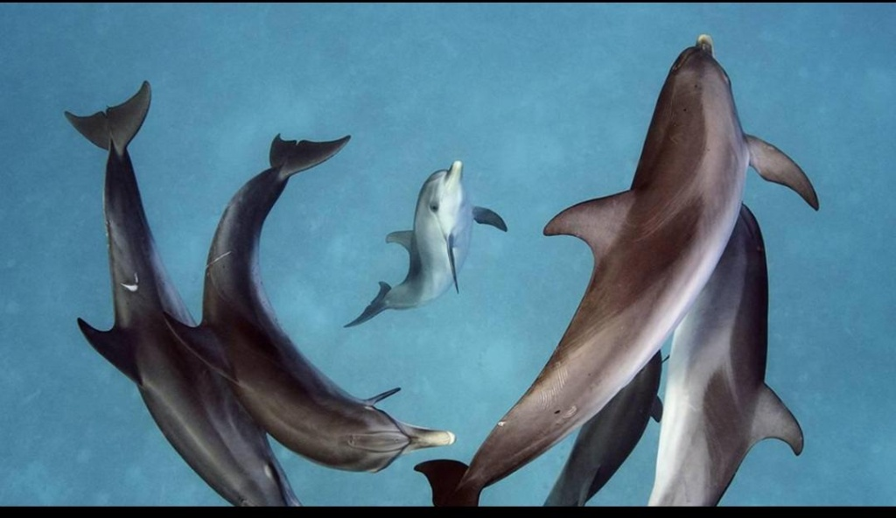
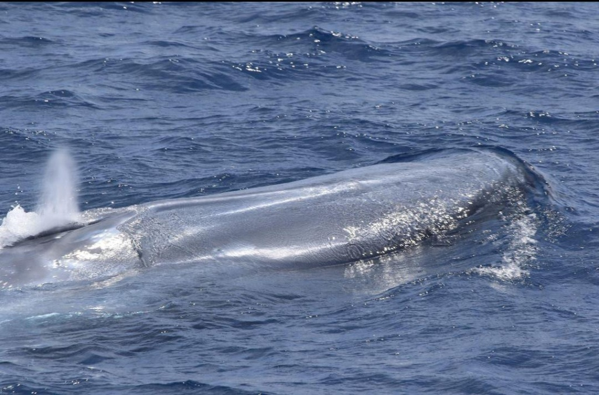
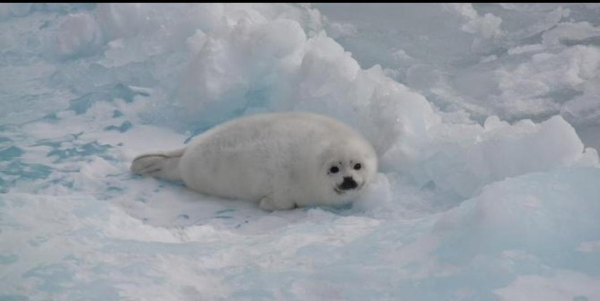

El Reino Marino
Integrantes
- Integrante 1
- Integrante 2
- Integrante 3
Proyecto escolar para la materia de Cultura Digital
Preparatoria 16
Mantienen el equilibrio de los ecosistemas.
Ayudan a regular el clima del planeta.
Son fuente de alimento y recursos para millones de personas.
Algunos producen sustancias útiles para la medicina.
Dato interesante: Más del 70% de la superficie de la Tierra está cubierta por océanos, pero gran parte del mundo marino aún no ha sido explorado.
Respiran aire y alimentan a sus crías con leche.

Conocidos por su inteligencia y sociabilidad, respiran aire porque tienen pulmones, Son de sangre caliente, Tienen crías vivas, y existen mas de 40 especies de delfines.
Dato curioso: Duermen con un ojo abierto, Los delfines no pueden quedarse completamente inconscientes porque se ahogarían su respiración es voluntaria, no automática como la nuestra.

Puede medir más de 30 metros, pueden llegar a pesar más de 180 toneladas, su corazón pesa tanto como un elefante, y su dieta consiste principalmente en krill.
Dato curioso: Son los mamíferos más grandes que han existido en la Tierra.

Vive en zonas costeras y polares.
Dato curioso: Son excelentes nadadoras y pueden permanecer bajo el agua por hasta 20 minutos.
Son los vertebrados más abundantes del océano.
Tiburón blanco
Dato curioso: Los caballitos de mar, el macho lleva los huevos.
No tienen columna vertebral.
Muchos invertebrados poseen sistemas de protección sorprendentes, como el uso de tinta o veneno.